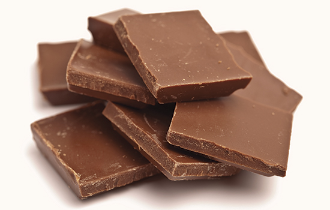
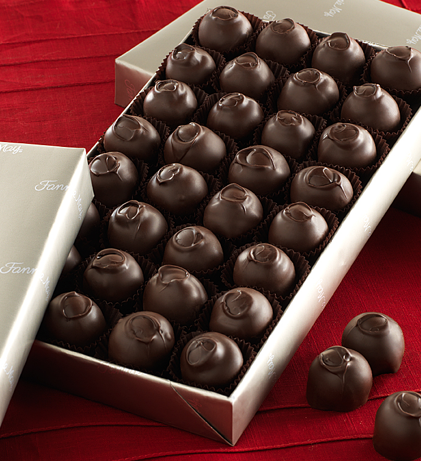
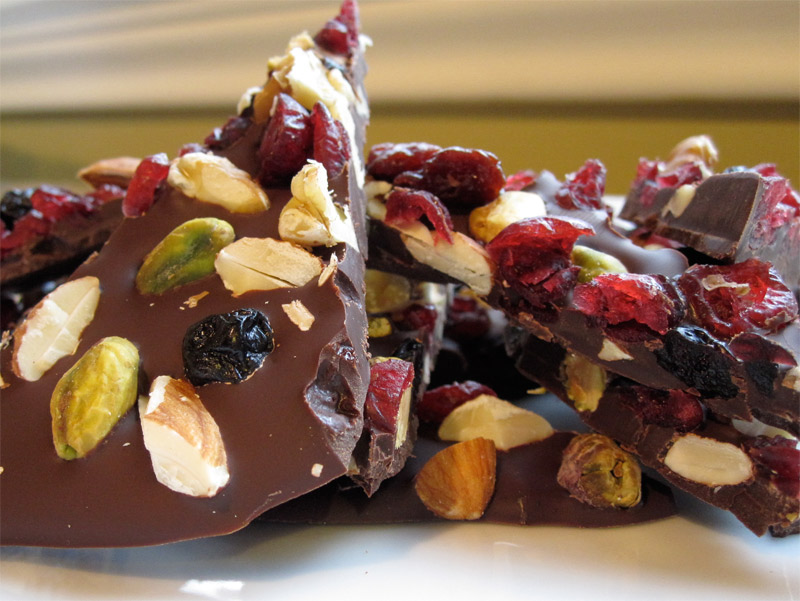
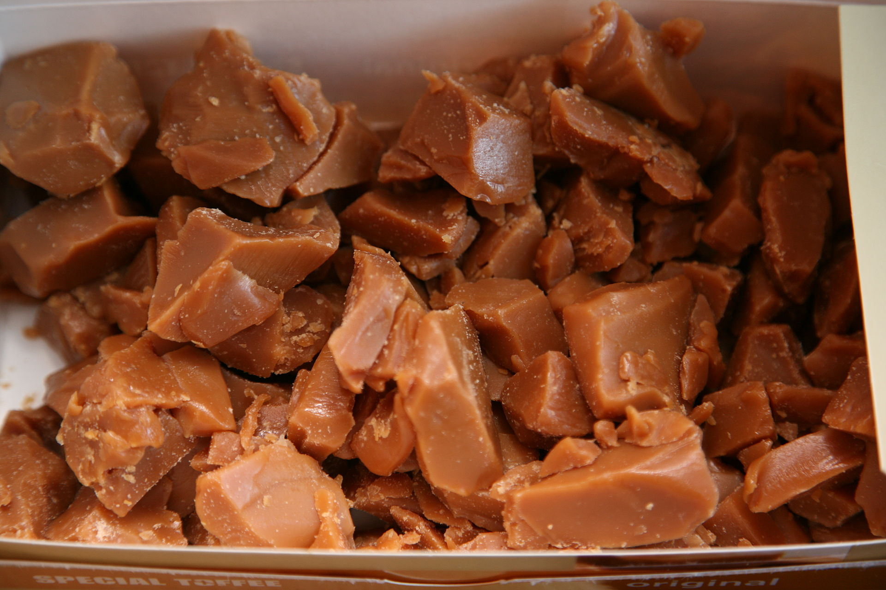
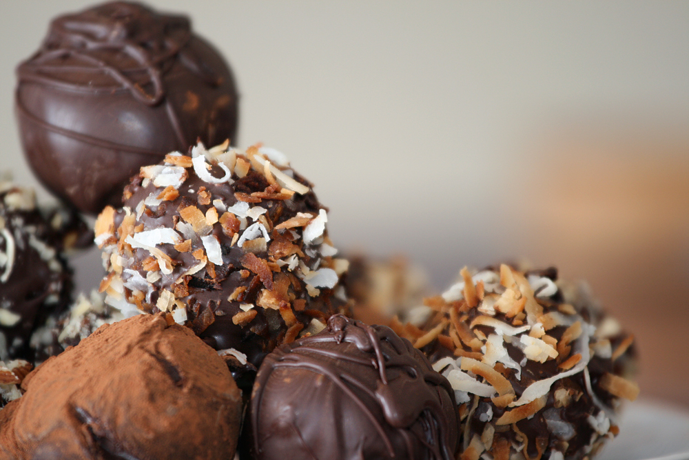
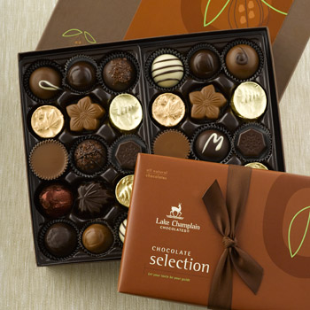
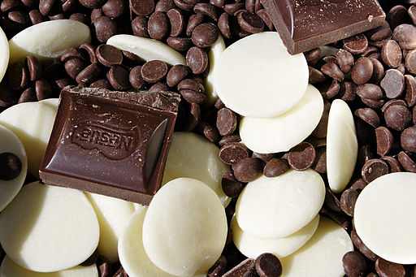

Bertha's Deluxe Chocolates 
Bertha's Deluxe Chocolates
List of our Products
Milk Chocolates
"Milk chocolate," the variety that accounts for, at minimum, approximately 87.5% of the solid chocolate actually eaten in the United States alone, is solid chocolate made with milk, in the form of milk powder, liquid milk, or condensed milk, added. In the 1870s, Swiss confectioner Daniel Peter developed solid milk chocolate using condensed milk, but German company Jordan and Timaeus in Dresden, Saxony had already invented milk chocolate in 1839; hitherto it had only been available as a drink. The U.S. Government requires a 10% concentration of chocolate liquor. EU regulations specify a minimum of 25% cocoa solids. However, an agreement was reached in 2000 that allowed what by exception from these regulations is called "milk chocolate" in the UK, Ireland, and Malta, containing only 20% cocoa solids, to be traded as "family milk chocolate" elsewhere in the European Union.
Dark Chocolates
"Dark chocolate", also called "plain chocolate" or "black chocolate", is produced by adding fat and sugar to cocoa. It is chocolate with no milk or much less than milk chocolate. The U.S. has no official definition for dark chocolate. Dark chocolate can be eaten as is, or used in cooking, for which thicker, baking bars, usually with high cocoa percentages ranging from 70% to 99% are sold. Dark is synonymous with semisweet, and extra dark with bittersweet, although the ratio of cocoa butter to solids may vary.
Nuts and Chews
The candy is available in marshmallow, vanilla, chocolate, and strawberry flavors. At one time, there was a fifth flavor, banana. "Mini Charleston Chews" are a bite-sized, similarly-shaped version of the candy bar, introduced in 1998. The original packaging for Charleston Chews was a grey box that had the brand name in small red font at the bottom of the box. Freezing results in them shattering with ease when chewed. Some people prefer eating them frozen.
Brittles and Toffies
Toffee is a candy made by caramelizing sugar or molasses (creating inverted sugar) along with butter, and occasionally flour. The mixture is heated until its temperature reaches the hard crack stage of 149 to 154 °C (300 to 310 °F). While being prepared, toffee is sometimes mixed with nuts or raisins.
Truffles
A chocolate truffle is a type of chocolate confectionery, traditionally made with a chocolate ganache centre coated in chocolate, cocoa powder or chopped toasted nuts (typically hazelnuts, almonds or coconut), usually in a spherical, conical, or curved shape. Their name derives from their traditional shape, which resembles the truffle, an edible part of the tuber fungus.
Gifts
We have a wide range of luxury chocolates which come in elegent gift packing. We also deliver to the address where the gift is to be sent. Perfect for pleasing a crowd or reaching out across the miles, our baskets and towers leave a lasting impression. Unwrapping and unpacking each delicious chocolate layer only heightens the delight!
Holiday assortments
Our delectable chocolate assortments are proof. Enjoy an exciting array of creamy caramels, rich ganaches, nutty pralines, luscious fruit fillings, and sumptuous ...It’s not true what they say: You can have it all! Our delectable chocolate assortments are proof. Enjoy an exciting array of creamy caramels, rich ganaches, nutty pralines, luscious fruit fillings, and sumptuous solids inside a carefully selected assortment of milk, dark, and white Belgian chocolate.